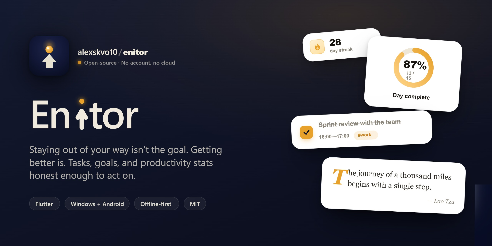

Enitor
Staying out of your way isn't the goal. Getting better is.
Tasks, goals, and honest productivity stats — Windows and Android, fully local, no account required.
Windows: unpack the zip and run enitor.exe. Android: install the APK. No installer, no store, no account.
What makes it different
- A weekly retrospective that comes to you. Monday evening, Enitor opens the past week: productivity against the week before, your best day, the goals you'd set, and whether your estimates got closer or further off. No data for that week, no window.
- Estimate accuracy. Planned vs. actual time, by task count and by time weight, broken down by tag — so you eventually learn that you're always 20% short.
- Streaks that are fair. Days with no tasks neither break nor pad your streak, and today never breaks it while it's still open.
- Carry-over is never silent. At the 4:00 AM day boundary the app asks what to move, copies it to today, and leaves the original where it was. History is never rewritten.
- Genuinely yours. No account, no cloud, no telemetry. Everything is in local storage; export and import cover backups and moving to a new device.
Screenshots